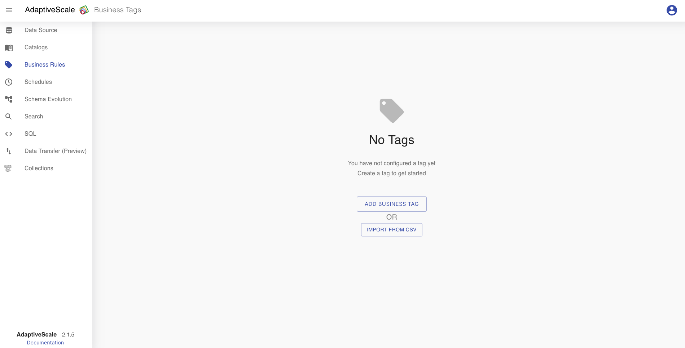
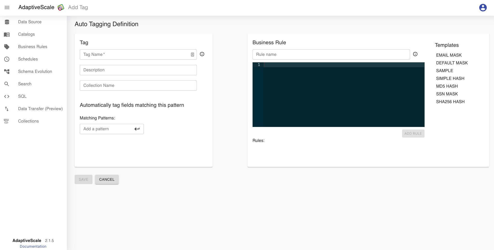
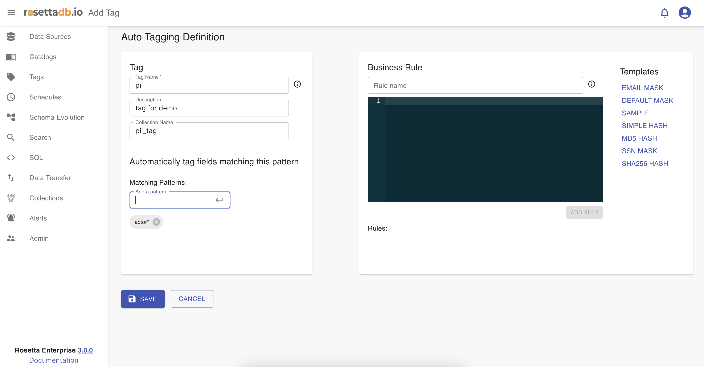
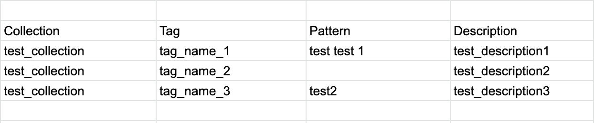
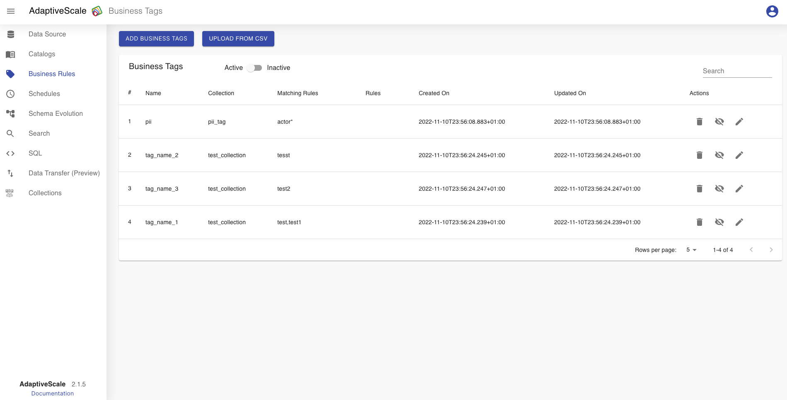
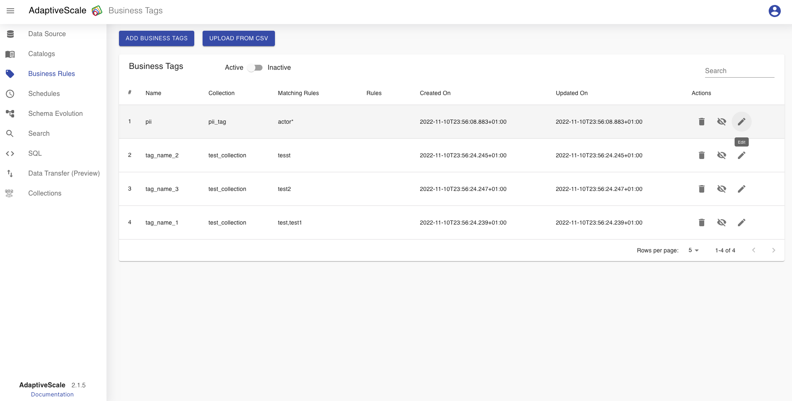
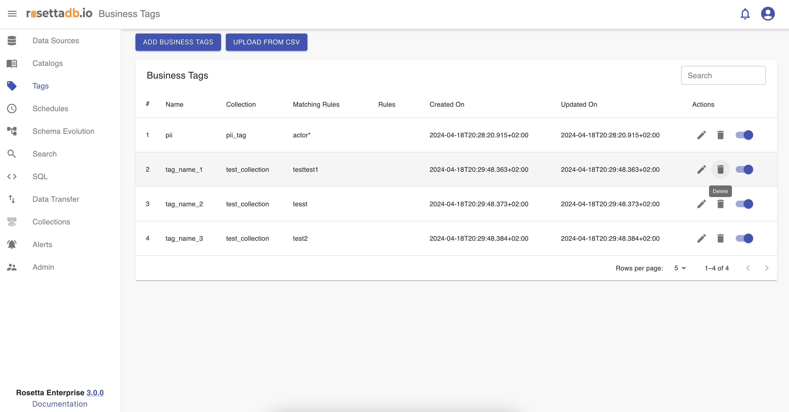
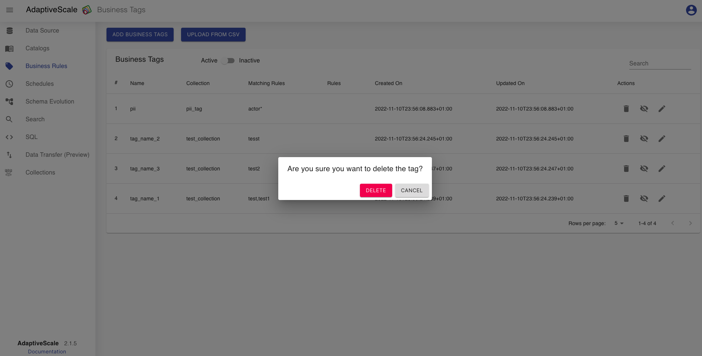
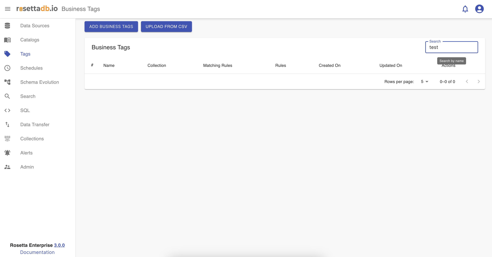
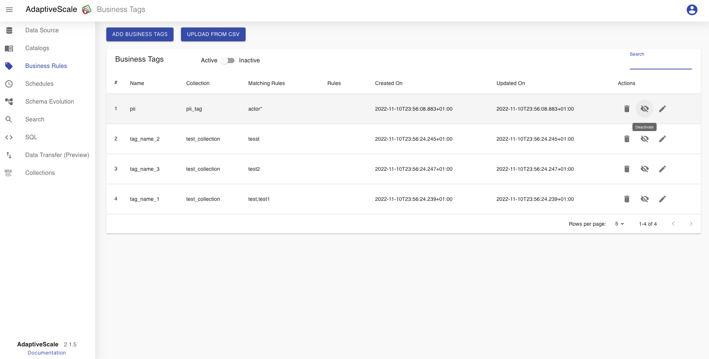

Tags
Tags category allows users to create business tags for organizing and labeling data. To create a business tag, users must provide a tag name, description, and collection name. Alternatively, users can import tags from a CSV file, offering another convenient method for adding multiple tags at once.
Once the necessary information is filled out or imported, the business tag is created and available for use within the system. These tags serve as a powerful tool for categorizing and organizing data, enhancing its usability and accessibility across various workflows.
Example
Create a business tag
To create a business tag, the user must click on Tags tab from the menu on the left.
If there are no tags created, the user clicks on Add Business Tag button to add a new tag or clicks on Import From CSV which is an option to import a CSV file as a new tag.

Business tag
When Add Business Tag button is clicked, the user must fill the tag name with a unique name, a description for that tag and a collection name.

A matching pattern is an act of checking a given sequence of tokens for the presence of the constituents of some pattern. In the input field of the matching pattern, we can give a name of a data source column, field, or the data source itself to tag it accordingly.
In the previous section in Data sources, we can recall that we had a column named actor.
Let us use that column for an example with a matching pattern.
In the matching pattern input field, we put the name of the column from the data source actor* which means that all tables or columns that have an actor in their name will be tagged with pii tag.

We can see the result when we run the catalog, on the Catalog tab or Schema evolution. So table actor, actor_genre and column actor_id are all tagged with pii tag.
Business rules are used for applying rules like masking, on the data itself for all the fields that have the given matching tag.
After clicking Save button all the input is saved and the business tag is created.
Import CSV
Business tags can be added also by uploading CSV files. The CSV file should have the following columns: Collection, Tag, Pattern and Description, for adding multiple matching rules in Pattern column the user should separate them with space.
The CSV file: 
The Business Tags table:

Edit a business tag
Now that one business tag is created, on Tags tab the user can see a list of the tags and a buttons as Add Business Tag and Import from CSV that redirects to the Tags screen for creating a new business tag. The tag can be edited, deleted, activated or deactivated and searched.
When the user clicks on the pen icon next to the tag from the list it can edit some of the fields and save the changes.

Delete a business tag
The deletion of a tag is done by clicking on the bin icon.

When the icon is clicked, a pop up appears with a question if the user is sure about deleting the tag, and if yes the user clicks Delete and if not clicks Cancel.

Search for a business tag
The user can search for a tag from the list of business tags. The tag that we created as an example is named tag, so if the user searches for test there will be no results.

Activate a tag
When the user creates a tag, by default it is listed in Active tags list.
If the user wants to deactivate the tag it can click on the eye icon.

Deactivate a tag
When the user deactivates a tag, by clicking on deactivate button, that tag then will be listed in Inactive tags list.
If the user wants to activate the tag it is done by clicking on the eye icon.